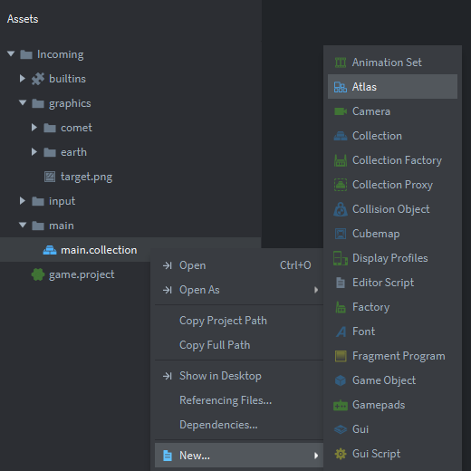
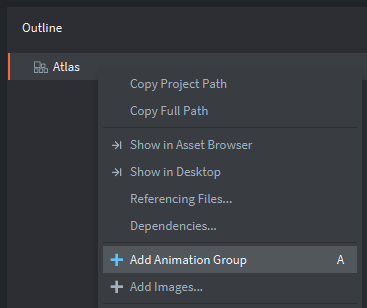
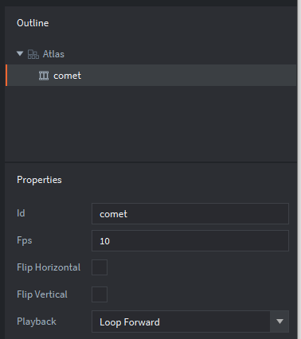
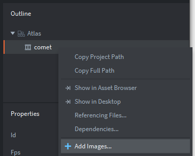
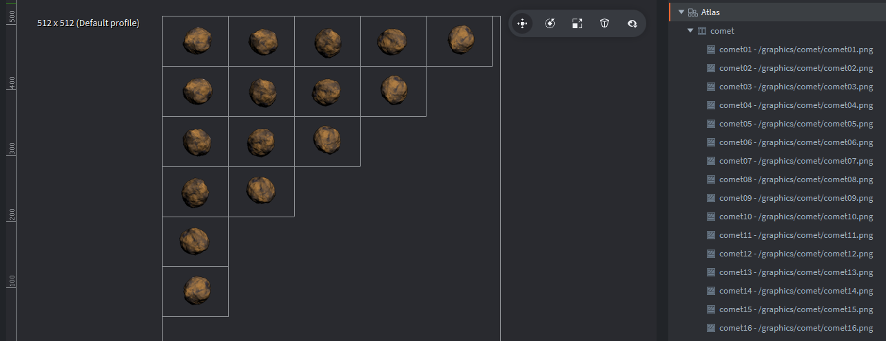
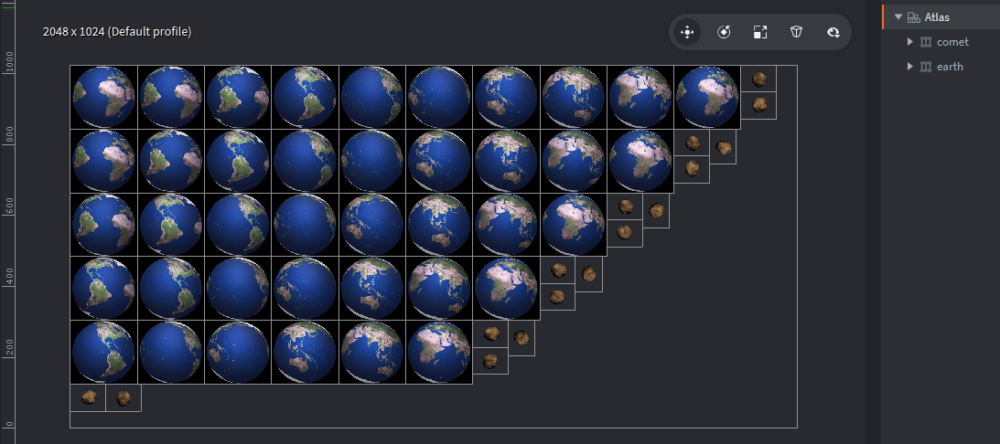
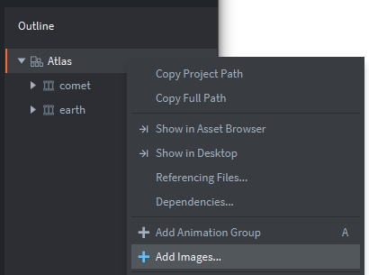

Tutorials for 2D games projects
Incoming | Creating the atlas.
Remember that Defold needs to store graphics in a memory efficient way by converting png and other file formats into a native binary format. You do this by creating an atlas and importing the images into it.
The atlas also allows you to create flipbook animations very easily by grouping sprites into an animation set and setting a frames per second attribute. You can have more control over this with code.
- In the assets panel, inside the 'main' folder, find 'main.collection'. Right click this file and select, 'New...', 'Atlas'.

- Name the atlas, 'graphics', and click, 'Create Atlas'.
- In the outline panel, right click 'Atlas' and select, 'Add Animation Group'.

- In the properties panel, change the Id to 'comet' and set the Fps to 10.

The frames per second (Fps) is how fast the animation will be played. Ten frames every second will give a nice motion to the comet without it being too much. It would take six seconds for the comet to make one full rotation. At the moment there is no way to change this in code, so if you wanted comets spinning at different speeds you would need to make different animation sets for that. There are more complicated ways, but it's not worth it! Exposing the Fps property is in the Defold developers backlog!
- Add the images to the animation set by right clicking 'comet' and selecting, 'Add Images...'.

- Add all the images for the comet by selecting the first one (/graphics/comet/comet01.png), holding down shift and selecting the last one (/graphics/comet/comet16.png). Be careful not to include the earth images too!
- You should now see the image filenames in the outline panel. If you press 'F' that will zoom out the editor window and you should see the sprites too.

You can preview the animation by selecting the comet animation in the outline panel and pressing [space] or View... Play from the menu bar.
It's worth noting that if we simply wanted to rotate the sprite, we could do this by rotating the game object for the sprite in a script. You would not need an animation set. However, our comet rotates in 3D and has a slight wobble which is a more interesting effect.
- Now repeat this process from step 3 to add the animation set for the earth graphics. Call the animation set, 'earth' and remember to set the Fps property to 10. There are forty images to add to the earth set.
If you have followed the steps correctly, your editor and outline panel should look like this:

(We have collapsed the comet and earth animation sets in the outline view here.)
- Finally, we need to add an image that we are going to use as a firing target. In the outline panel, right click the 'Atlas' and select, 'Add Images...' This time it is not an animation set, just a static sprite.

- Scroll down and find '/graphics/target.png' and click, 'OK'.
All the graphics we are using in this tutorial are now in the atlas and ready to be applied to game objects. Stage 3a >
 Craig'n'Dave | Version 1.3
Craig'n'Dave | Version 1.3